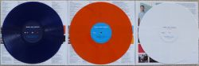

About Me
My name is Hector Avalos. I have a wife and a 4 year old daughter, as well as 3 dogs. A little bit about me is that I enjoy numerous hobbies like video games, cars, and photography. I am taking this class because I intend on using the skills that I will learn in this class to build my own website to use as a portfolio for my photography. I want to become a professional photographer aside from my computer science career.
Jimmy Eat World
1. Origins and Early Career
Jimmy Eat World's journey began in the vibrant music scene of Mesa, Arizona, where the band members bonded over their shared love for punk and indie rock. In the early 1990s, amidst the desert landscape, Jim Adkins, Tom Linton, Mitch Porter, and Zach Lind formed what would become a powerhouse of emotive rock music. Drawing inspiration from bands like Jawbreaker and The Promise Ring, they honed their craft in garages and small venues, playing local gigs and DIY shows.
Their self-titled debut album, released in 1994, may not have garnered widespread attention initially, but it laid the groundwork for their distinctive sound characterized by raw energy, introspective lyrics, and infectious melodies. Songs like "Call It In The Air" and "Anderson Mesa" showcased their penchant for catchy hooks and emotive storytelling, hinting at the potential that would soon propel them into the spotlight. As they continued to refine their style and build a loyal following within the underground music scene, Jimmy Eat World's relentless work ethic and unwavering dedication set them on a trajectory towards greater success.
2. Commercial Breakthrough and Mainstream Success
The pivotal moment came with the release of "Bleed American" in 2001, which catapulted Jimmy Eat World into the mainstream spotlight. The album's eponymous track, along with singles like "The Middle" and "Sweetness," became instant classics, dominating the airwaves and capturing the hearts of listeners worldwide. "The Middle," in particular, emerged as an anthem for a generation, resonating with its message of self-acceptance and resilience in the face of adversity. As the music video received heavy rotation on MTV and other music channels, Jimmy Eat World found themselves thrust into the forefront of the early 2000s alternative rock scene.
The album's fusion of infectious melodies, anthemic choruses, and heartfelt lyrics struck a chord with audiences, earning widespread critical acclaim and commercial success. With their dynamic performances and relentless touring schedule, the band further solidified their reputation as one of the era's most exciting and influential acts, paving the way for a new wave of emo and pop-punk bands to follow.
3. Evolution and Continued Relevance
In the years following their breakthrough, Jimmy Eat World has continued to evolve creatively while staying true to their roots. Albums like "Futures" (2004) and "Chase This Light" (2007) saw the band exploring new sonic territories, incorporating elements of electronic music and experimentation while maintaining their signature sound. Tracks such as "Pain" and "Big Casino" showcased their ability to craft dynamic and emotionally resonant songs that spoke to the human experience.
Lyrically, their music delves into universal themes of love, loss, and self-discovery, offering listeners a sense of connection and catharsis. Whether through introspective ballads or high-energy anthems, Jimmy Eat World's music continues to resonate with audiences of all ages, cementing their status as one of alternative rock's most enduring and influential acts. With each new release, they reaffirm their relevance in an ever-changing musical landscape, inspiring both longtime fans and newcomers alike with their passion, authenticity, and unwavering commitment to their craft.